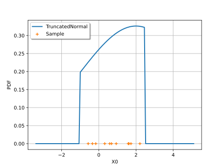
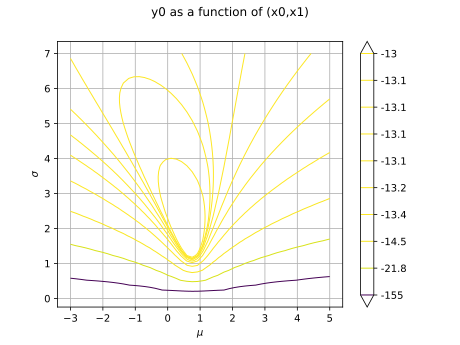
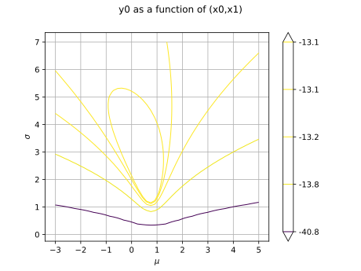
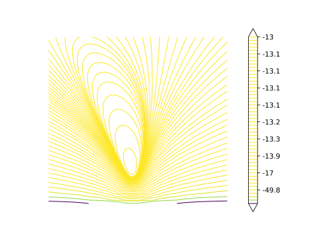
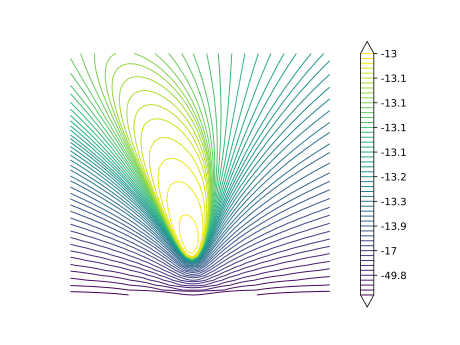
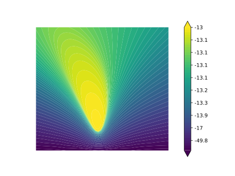
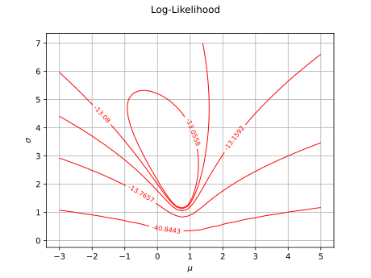
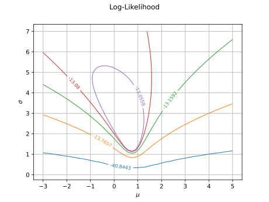

Note
Go to the end to download the full example code.
Plot the log-likelihood contours of a distribution¶
In this example, we show how to plot the bidimensionnal log-likelihood contours of function given a sample.
import openturns.viewer as otv
import openturns as ot
Generate a sample¶
We create a TruncatedNormal and generate a small sample.
a = -1
b = 2.5
mu = 2.0
sigma = 3.0
distribution = ot.TruncatedNormal(mu, sigma, a, b)
sample = distribution.getSample(11)
In order to see the distribution and the sample, we draw the PDF of the distribution and generate a cloud which X coordinates are the sample values.
graph = distribution.drawPDF()
graph.setLegends(["TruncatedNormal"])
zeros = ot.Sample(sample.getSize(), 1)
cloud = ot.Cloud(sample, zeros)
cloud.setLegend("Sample")
graph.add(cloud)
graph.setLegendPosition("upper left")
view = otv.View(graph)

The following function computes the log-likelihood of a TruncatedNormal
which mean and standard deviations are given as input arguments.
The lower and upper bounds of the distribution are computed as minimum and maximum of the sample.
Define the log-likelihood function¶
The following function evaluates the log-likelihood function given a point ![X=(\mu,\sigma]() ).
In order to evaluate the likelihood on the sample, we use a trick: we evaluate
the computeMean method on the log-PDF sample, then multiply by the sample size.
This is much faster than using a for loop.
).
In order to evaluate the likelihood on the sample, we use a trick: we evaluate
the computeMean method on the log-PDF sample, then multiply by the sample size.
This is much faster than using a for loop.
def logLikelihood(X):
"""
Evaluate the log-likelihood of a TruncatedNormal on a sample.
"""
samplesize = sample.getSize()
mu = X[0]
sigma = X[1]
a = sample.getMin()[0]
b = sample.getMax()[0]
delta = (b - a) / samplesize
a -= delta
b += delta
distribution = ot.TruncatedNormal(mu, sigma, a, b)
samplelogpdf = distribution.computeLogPDF(sample)
loglikelihood = samplelogpdf.computeMean() * samplesize
return loglikelihood
With the draw method¶
In this section, we use the draw method which is available for any Function which has 1 or 2 input arguments.
In our case, the log-likelihood function has two inputs: ![x_0=\mu]() and
and ![x_1=\sigma]() .
.
Draw the log-likelihood function with the draw method: this is much faster than using a for loop. In order to print LaTeX X and Y labels, we use the “r” character in front of the string containing the LaTeX command.
logLikelihoodFunction = ot.PythonFunction(2, 1, logLikelihood)
graphBasic = logLikelihoodFunction.draw([-3.0, 0.1], [5.0, 7.0], [50] * 2)
graphBasic.setXTitle(r"$\mu$")
graphBasic.setYTitle(r"$\sigma$")
view = otv.View(graphBasic)

Customizing the number of levels¶
The level values are computed from the quantiles of the data, so that the contours are equally spaced.
We can configure the number of levels by setting the Contour-DefaultLevelsNumber key in the ResourceMap.
ot.ResourceMap.SetAsUnsignedInteger("Contour-DefaultLevelsNumber", 5)
logLikelihoodFunction = ot.PythonFunction(2, 1, logLikelihood)
graphBasic = logLikelihoodFunction.draw([-3.0, 0.1], [5.0, 7.0], [50] * 2)
graphBasic.setXTitle(r"$\mu$")
graphBasic.setYTitle(r"$\sigma$")
view = otv.View(graphBasic)

We get the underlying Contour object as a Drawable.
contour = graphBasic.getDrawable(0)
To be able to use specific Contour methods like buildDefaultLevels, we need to use the method named getImplementation.
contour = contour.getImplementation()
contour.buildDefaultLevels(50)
manyLevelGraph = ot.Graph()
manyLevelGraph.add(contour)
view = otv.View(manyLevelGraph)

Using a rank-based normalization of the colors¶
In the previous plots, there was little color variation for isolines corresponding to large log-likelihood values.
This is due to a steep cliff visible for low values of ![\sigma]() .
To make the color variation clearer around -13, we use a normalization based on the rank of the level curve and not on its value.
.
To make the color variation clearer around -13, we use a normalization based on the rank of the level curve and not on its value.
contour.setColorMapNorm("rank")
rankGraph = ot.Graph()
rankGraph.add(contour)
view = otv.View(rankGraph)

Fill the contour graph¶
Areas between contour lines can be colored by requesting a filled outline.
# sphinx_gallery_thumbnail_number = 6
contour.setIsFilled(True)
filledGraph = ot.Graph()
filledGraph.add(contour)
view = otv.View(filledGraph)

Getting the level values¶
The level values can be retrieved with the getLevels method.
drawables = graphBasic.getDrawables()
levels = drawables[0].getLevels()
levels
Monochrome contour plot¶
We first configure the contour plot. We use the getDrawable method to take the first contour as the only one with multiple levels. Then we use the setLevels method: we could have changed the levels. We use the setColor method to get a monochrome contour. In order to inline the level values labels, we use the setDrawLabels method.
contour = graphBasic.getDrawable(0)
contour.setLevels(levels)
contour.setDrawLabels(True)
contour.setColor("red")
Hide the color bar. The method to do this is not available to generic Drawables, so we need to get the actual Contour object.
contour = contour.getImplementation()
contour.setColorBarPosition("")
Then we create a new graph. Finally, we use setDrawables to define this Contour object as the single Drawable.
graphFineTune = ot.Graph("Log-Likelihood", r"$\mu$", r"$\sigma$")
graphFineTune.setDrawables([contour])
view = otv.View(graphFineTune)

Set multiple colors manually¶
The Contour class does not allow us to manually set multiple colors.
Here we show how to assign explicit colors to the different contour lines by passing keyword
arguments to the class:~openturns.viewer.View class.
# Build a range of colors corresponding to the Tableau palette
palette = ot.Drawable.BuildTableauPalette(len(levels))
view = otv.View(graphFineTune, contour_kw={"colors": palette, "cmap": None})

otv.View.ShowAll()